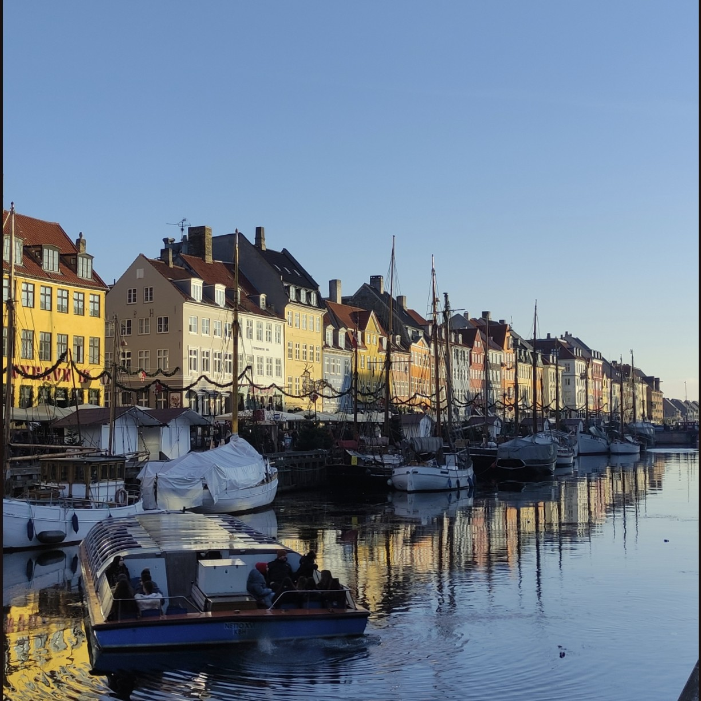
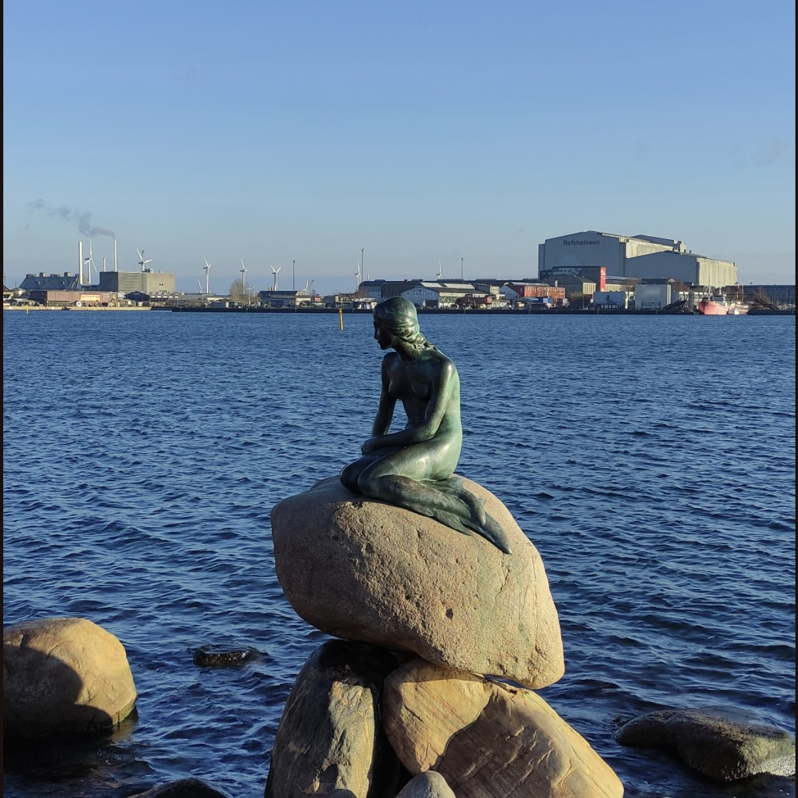
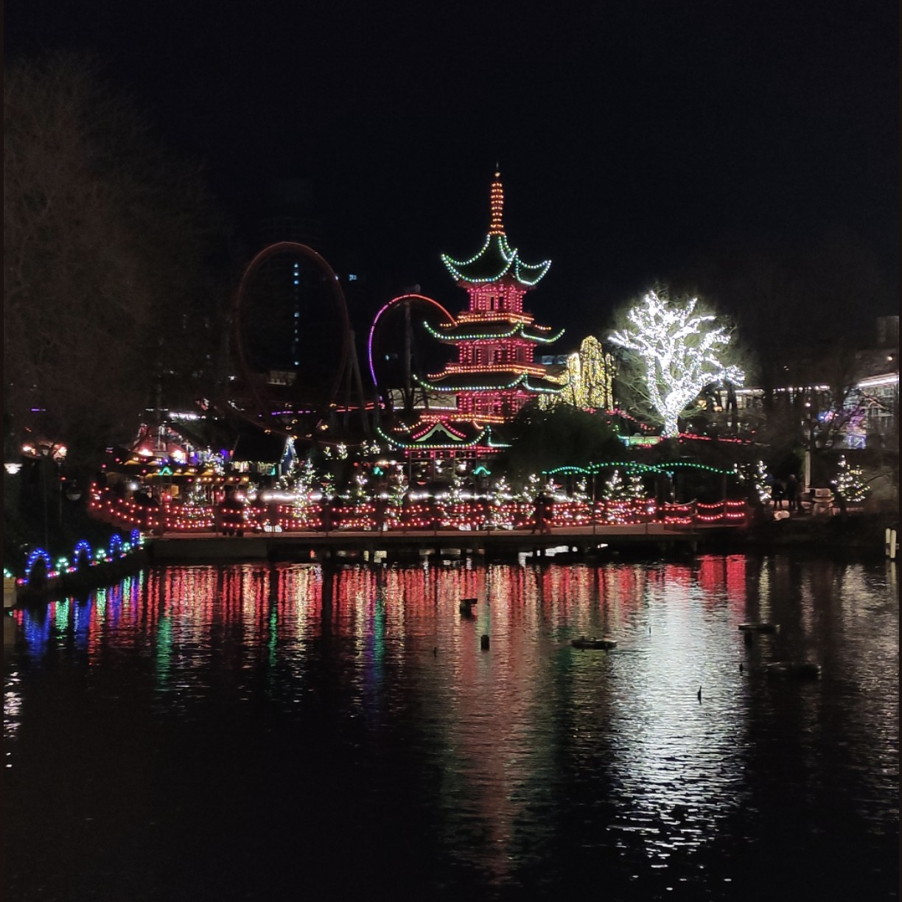
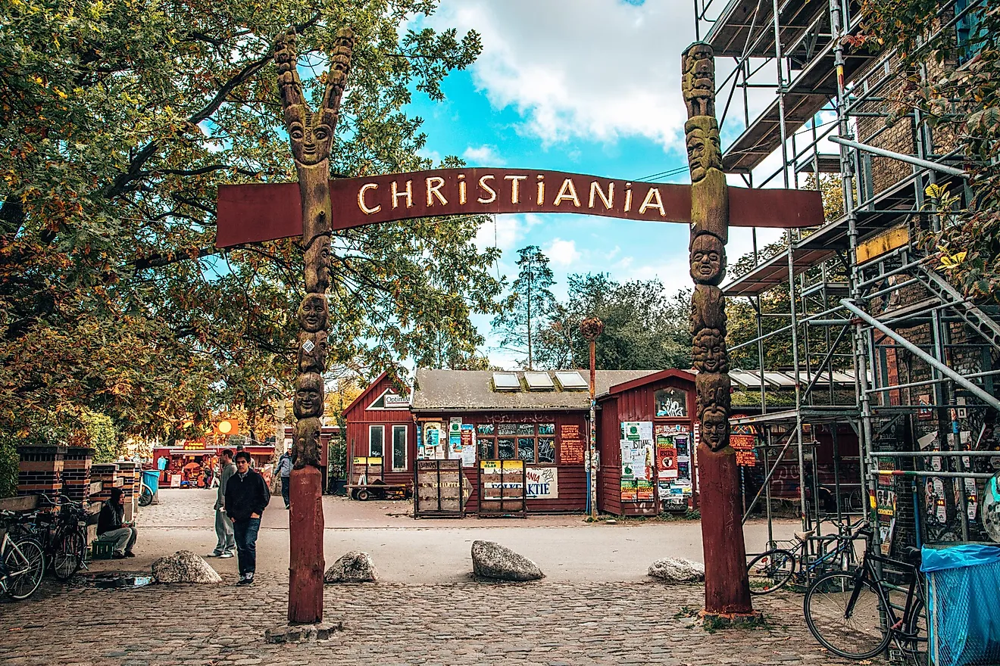
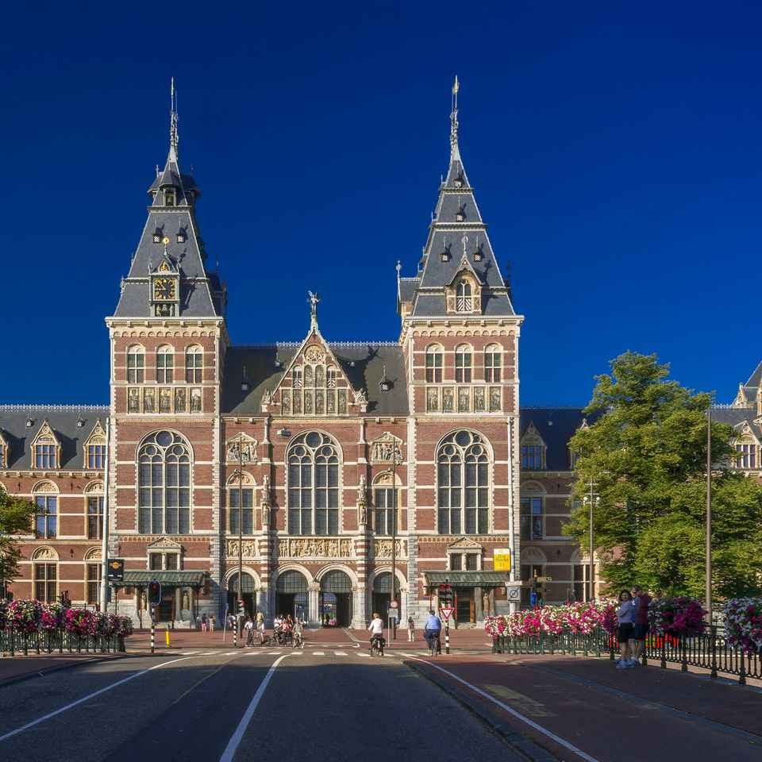
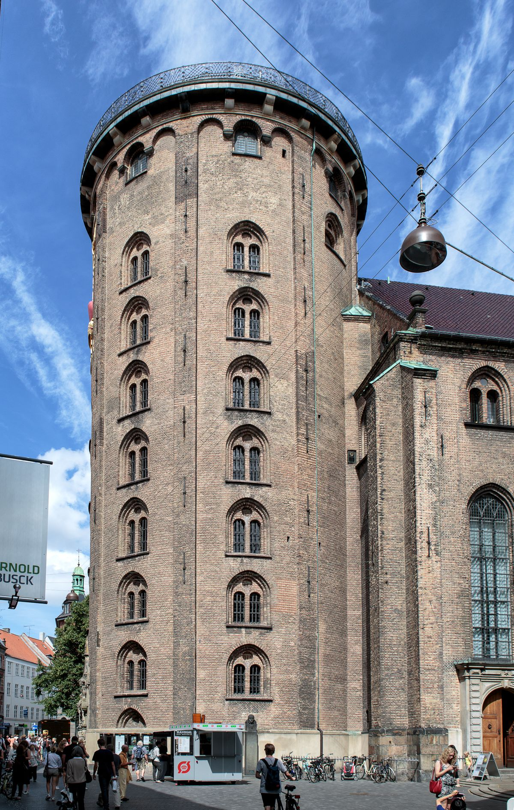
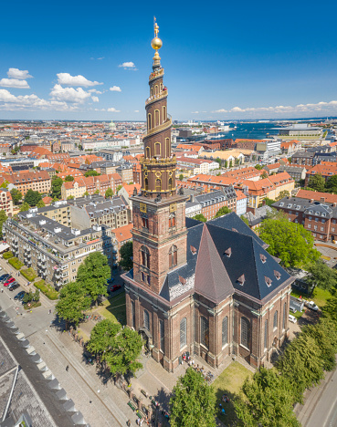
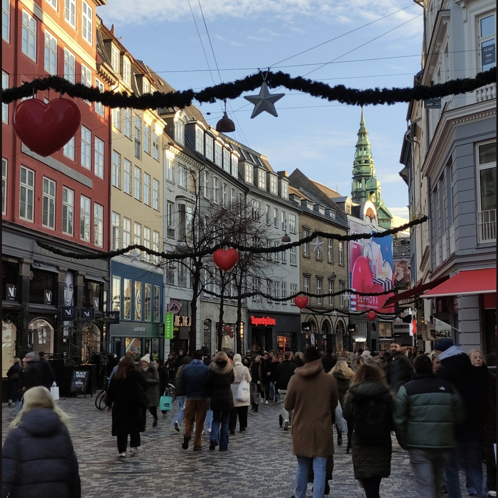

1. Introducción
Copenhague es una de las ciudades más habitables y con mejor calidad de vida del mundo. Su combinación de historia vikinga, arquitectura de vanguardia, canales pintorescos y una cultura de diseño única la convierten en un destino fascinante.
El nombre "Copenhague" proviene del danés "København", que significa "puerto de mercaderes". Y es que el agua está presente en toda la ciudad: desde el famoso puerto de Nyhavn hasta las aguas limpias donde los locales se bañan en pleno centro. Además, Copenhague es la capital mundial de la bicicleta (¡hay más bicis que personas!). Es una ciudad perfecta para recorrer a pie, en bici o en barco.
---3. 🏨 Dónde alojarse en Copenhague
🏛️ Indre By (Centro Histórico) ⭐⭐⭐⭐
⛵ Nyhavn ⭐⭐⭐⭐
🎨 Vesterbro ⭐⭐⭐⭐
🌍 Nørrebro ⭐⭐⭐
🏝️ Christianshavn ⭐⭐⭐⭐
🌳 Østerbro ⭐⭐⭐
Mi recomendación personal es alojarse en Indre By (centro) si es tu primera vez en Copenhague y quieres estar cerca de todo. Si buscas ambiente trendy y vida nocturna, elige Vesterbro. Para una experiencia más auténtica y económica, Nørrebro es una excelente opción. Si quieres la foto de postal, alójate en Nyhavn (pero es caro).
🚲 Bicicletas en Copenhague: La ciudad es un paraíso para las bicis. Alquilar una bici es la mejor forma de moverse (hay carriles bici por todas partes). Hay bicis de alquiler público (Bycyklen) y muchas tiendas de alquiler (15-30€/día).
🚇 Metro en Copenhague: Funciona 24/7. Las líneas M1, M2, M3 (Cityringen) y M4 conectan toda la ciudad. La tarjeta City Pass (80-200 DKK) es la opción más económica para moverse.
🏠 Alternativas: Los apartamentos turísticos (Airbnb) son populares en Copenhague, especialmente para estancias más largas o grupos. Los hoteles en el centro son caros, así que considera alojarte en Vesterbro o Nørrebro para ahorrar.
4. ☀️ Qué ver en Copenhague

1. ⛵ Nyhavn (El puerto de las casas de colores)
Nyhavn es la imagen más famosa de Copenhague. Este puerto del siglo XVII está flanqueado por casas de colores (amarillo, rojo, azul) que albergan restaurantes, bares y cafeterías. Fue el hogar del escritor Hans Christian Andersen, que vivió en el número 20.
Pasear por el canal es una experiencia imprescindible. Puedes hacerlo a pie o en un barco turístico que recorre los canales. En verano, las terrazas se llenan de gente y el ambiente es fantástico.

2. 🧜♀️ La Sirenita (El símbolo de Copenhague)
La estatua de La Sirenita (Den Lille Havfrue) es el símbolo de Copenhague. Fue un regalo del cervecero Carl Jacobsen a la ciudad en 1913, inspirada en el cuento de Hans Christian Andersen. La estatua es pequeña (1,25 metros) y siempre está rodeada de turistas.
Está situada en el paseo marítimo Langelinie, cerca de la Ciudadela (Kastellet). Aprovecha la visita para pasear por los jardines de Kastellet y ver la fuente de Gefion.

3. 🎡 Tivoli Gardens (El parque de atracciones más antiguo del mundo)
Tivoli es el segundo parque de atracciones más antiguo del mundo (abrió en 1843). Inspiró a Walt Disney para crear Disneyland. Es mucho más que un parque de atracciones: tiene jardines preciosos, restaurantes, conciertos, fuegos artificiales y un ambiente mágico.
Las atracciones más famosas son la montaña rusa de madera "Rutschebanen" (de 1914, con operador humano que frena el tren), la torre de caída "Vertigo" y la noria "The Star Flyer" (80 metros de altura). En Navidad, se convierte en un mercadillo navideño espectacular.

4. 🕊️ Christiania (La ciudad libre)
Christiania es un barrio autónomo fundado en 1971 por un grupo de hippies que ocuparon unos cuarteles militares abandonados. Tiene sus propias reglas (no fotos en Pusher Street, no coches, no violencia). Es un lugar único, lleno de arte callejero, casas de colores, talleres y una atmósfera alternativa.
La calle principal, Pusher Street, es famosa por los puestos de marihuana (aunque es ilegal en Dinamarca, allí se tolera). No se pueden hacer fotos en esa calle (los "pushers" te lo impedirán).

5. 👑 Castillo de Rosenborg (Las joyas de la corona danesa)
El Castillo de Rosenborg es un palacio renacentista construido en 1606 por el rey Christian IV. Alberga las joyas de la corona danesa y la colección real de arte, muebles y tapices. Está rodeado por los Jardines del Rey, el parque más antiguo de Copenhague.
Lo más impresionante es el Tesoro Real, en el sótano, donde se guardan las coronas de los reyes y reinas daneses, las espadas ceremoniales y las joyas de diamantes.
6. 🏛️ Palacio de Christiansborg (El parlamento danés)
El Palacio de Christiansborg alberga los tres poderes del estado danés: el Parlamento (Folketinget), el Tribunal Supremo y las oficinas del Primer Ministro. También es la residencia oficial de la reina para recepciones de estado.
Se pueden visitar las ruinas de los castillos anteriores (debajo del palacio), las caballerizas reales, la cocina real, las salas de recepción (incluyendo el Salón del Trono y la Sala de la Reina) y la torre (106 metros, con vistas panorámicas gratuitas).

7. 🔭 Torre Redonda (Rundetårn) - Las mejores vistas del centro
La Torre Redonda es un observatorio astronómico del siglo XVII (1637-1642), construido por el rey Christian IV. Es famosa por su rampa en espiral de 209 metros (en lugar de escaleras), que permitía subir a caballo y carruaje hasta la cima.
Desde la plataforma superior (34 metros de altura) se obtienen las mejores vistas del casco antiguo de Copenhague. La rampa es muy curiosa y accesible para sillas de ruedas y carritos de bebé.

8. 👑 Castillo de Amalienborg (La residencia de invierno de la familia real)
Amalienborg es el conjunto de cuatro palacios idénticos alrededor de una plaza octogonal, que constituyen la residencia de invierno de la familia real danesa. Fue construido en el siglo XVIII en estilo rococó.
El Palacio de Christian VIII está abierto al público como museo de la historia real (con las habitaciones reales, muebles, arte y objetos personales). El momento más popular es el cambio de guardia (12:00 todos los días), cuando los guardias reales (livgarden) marchan desde el cuartel hasta la plaza.

9. ⛪ Iglesia de Nuestra Salvadora (Vor Frelsers Kirke) - La torre de caracol
La Iglesia de Nuestra Salvadora es famosa por su torre de caracol exterior, con 400 escalones en espiral alrededor del exterior de la torre. Subir es una experiencia vertiginosa (pero las vistas de Copenhague y Christiania son espectaculares).
La iglesia fue construida entre 1682 y 1696, y la torre se añadió en 1752. Las escaleras se vuelven cada vez más estrechas a medida que se sube. El último tramo es una pasarela exterior (con barandilla) que rodea la aguja.

10. 🛍️ Strøget (La calle peatonal más larga de Europa)
Strøget es una de las calles peatonales más largas de Europa (1,1 km). Conecta la Plaza del Ayuntamiento (Rådhuspladsen) con Kongens Nytorv (la plaza de Nyhavn). Está llena de tiendas (desde marcas internacionales hasta boutiques danesas de diseño), restaurantes, cafeterías y heladerías.
La calle principal (Strøget) es la más comercial, pero las calles adyacentes (como Gråbrødretorv) tienen un ambiente más auténtico, con restaurantes y bares. Es un lugar ideal para pasear, hacer compras (especialmente de diseño danés: muebles, ropa, joyería) y disfrutar del ambiente.
Copenhague es una ciudad muy segura y fácil de recorrer. El metro funciona 24/7 y las bicicletas son el medio de transporte rey. Alquila una bici para vivir la experiencia danesa (hay carriles bici por todas partes).
Compra la Copenhague Card (24-120h) si vas a visitar muchos museos y usar mucho el transporte. Incluye la entrada a más de 80 atracciones (Tivoli, Rosenborg, etc.) y el transporte público gratuito.
{kind=link}
{kind=link}
{kind=link}
{kind=link}
{kind=link}
{kind=link}
{kind=link}
{kind=link}
{kind=link}
{kind=link}
{kind=link}
{kind=link}
{kind=link}
{kind=link}
{kind=link}
{kind=link}
{kind=link}
{kind=link}
{kind=link}
{kind=link}